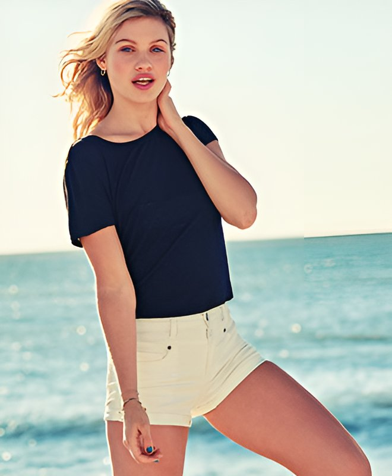
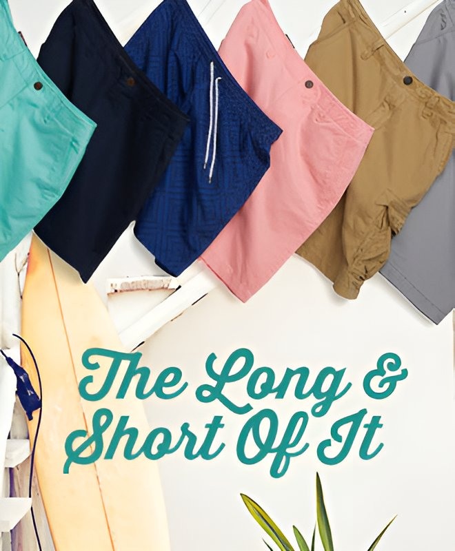
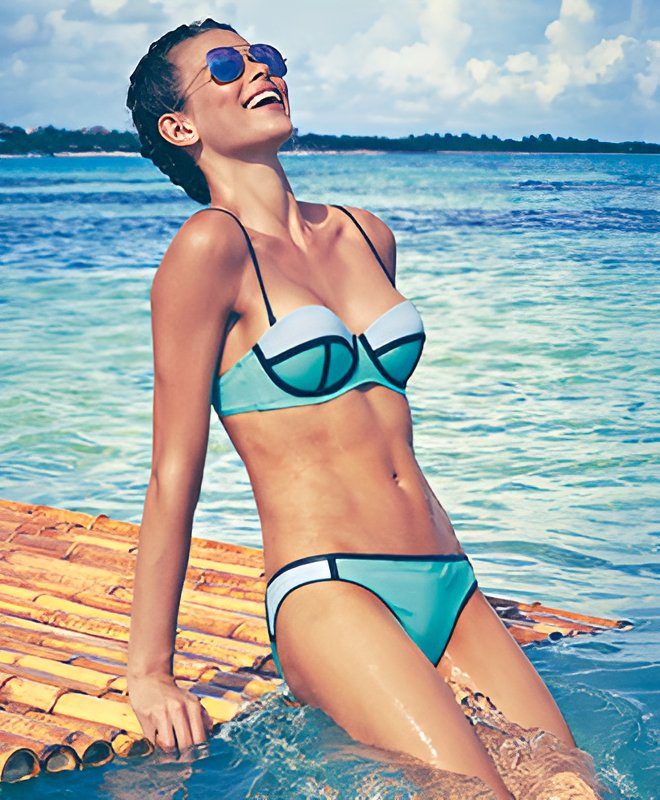
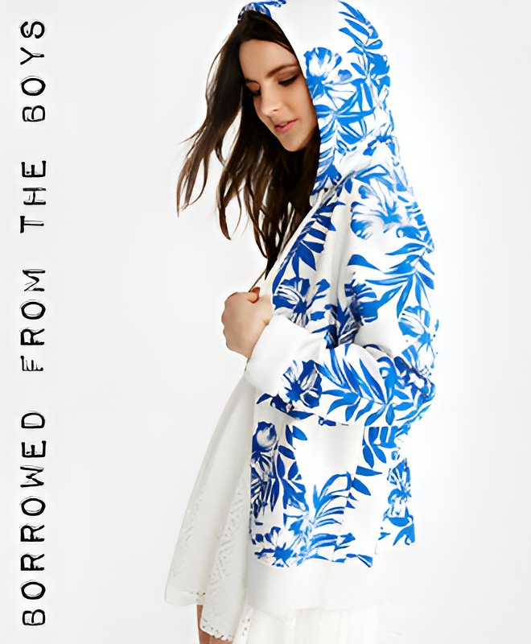
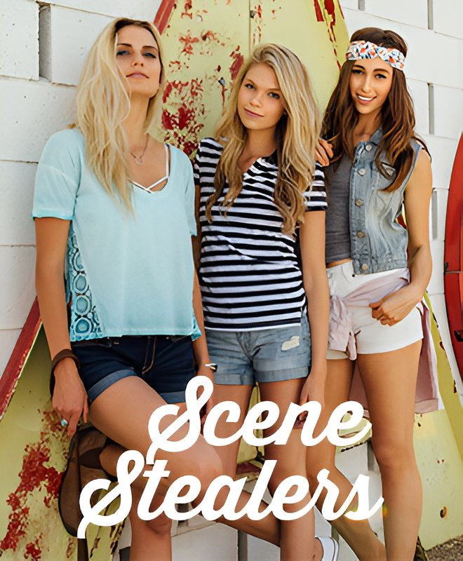

What's better than stealing his favorite hoodie? Claiming it for yourself.

Our newest spring styles, fresh out of the design studio and out in the world.
Wear it. Share it. Shop our Instagram faves!
Creative and art direction. Originally designed and built for Aéropostale.